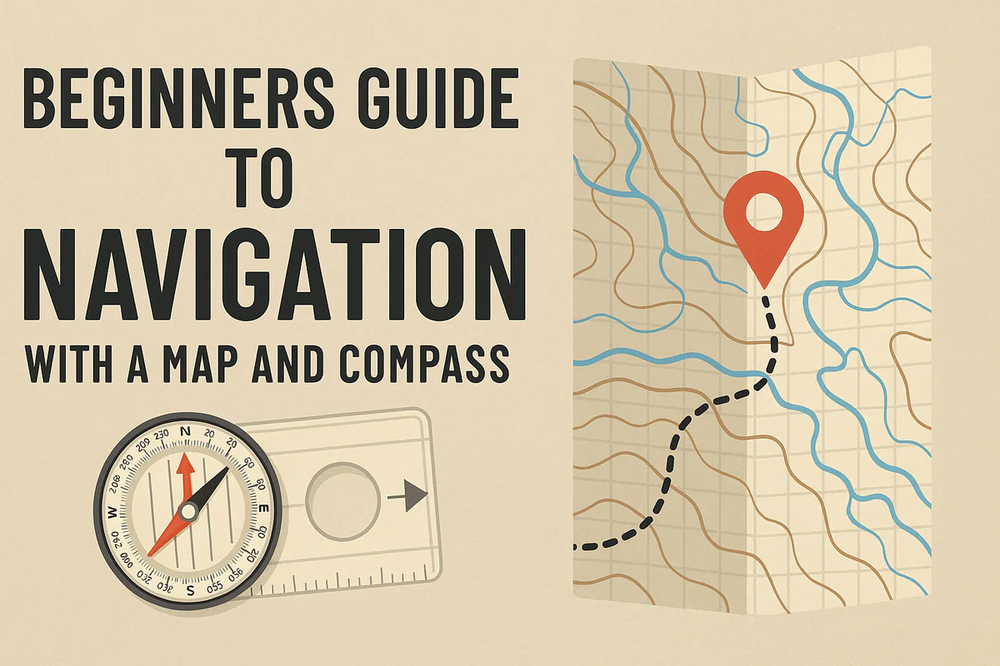

Start Here: Your Guide to ChinaTravel Blog
Posted on June 14, 2025 by Alessia Geng

Hey there, fellow traveler! Welcome to China Travel Blog—your go-to spot for all things amazing about traveling in China. If you’re new here, don’t worry. This page is like your trusty map to help you find your way around and get super excited about exploring this incredible country.
Why This Blog Exists
Let’s start with the “why.” I’m a native Chinese currently studying abroad, and I created this blog to share my home country with the world. A quick note on coverage: right now, the blog focuses on Mainland China. That’s simply because Hong Kong, Macao, and Taiwan are already quite well-known to international travelers, while Mainland China has so many hidden gems and lesser-explored spots that I think deserve more attention.
China has endless wonders—vast lands, rich history, warm people, and diverse cultures—but I’ve noticed many overseas friends only know bits of it (like Beijing or Shanghai). My goal? To show you the whole picture of Mainland China first: from the snowy mountains in the west to the tropical beaches in the south, from ancient temples to modern skyscrapers, from spicy Sichuan hot pot to sweet Cantonese dim sum. I hope this blog makes you think, “Wow, Mainland China sounds incredible—I need to visit!” And when you do, I want you to feel confident, curious, and ready to fall in love with every corner of it. Later on, I plan to add content about Hong Kong, Macao, and Taiwan too, so you’ll have a more complete guide to traveling across different parts of China.
Understanding Mainland China’s 7 Geographic Regions
Before we dive into specific cities or sights, let’s talk about Mainland China’s 7 geographic regions. Why? Because Mainland China is huge—about the same size as all of Europe! Splitting it into regions makes it easier to wrap your head around its diversity. Each region has its own unique vibe, landscape, culture, and food—and that’s exactly how we organize the “Destinations” section here.
When you click “Destinations” in the Categories menu, you’ll see these 7 regions. Here’s a quick intro to each:
1. Northeastern China
Think snowy winters, vast forests, and cities with a mix of Chinese and Russian influences. Harbin’s famous Ice Festival? That’s right here.
2. North China
Home to Beijing (China’s capital!) and iconic spots like the Great Wall. The land is dry, and the culture is deeply tied to ancient dynasties.
3. Northwestern China
Deserts, plateaus, and vibrant minority cultures. Imagine camel rides in the Gobi Desert or exploring Silk Road cities like Dunhuang.
4. Southwestern China
Mountains, rivers, and lush nature. This is where you’ll find giant pandas in Sichuan, the stunning Li River in Guilin, and ethnic groups like Tibetans and Yi people.
5. Central China
Mainland China’s “heartland,” crisscrossed by the Yangtze River. It blends history (like Xi’an’s Terracotta Army) with modern hubs like Wuhan.
6. East China
Warm weather, tropical beaches, and delicious seafood. Think Guangzhou’s Cantonese cuisine, Shenzhen’s skyscrapers, and Hainan Island’s resorts.
7. South China
Warm weather, tropical beaches, and delicious seafood. Think Guangzhou’s Cantonese cuisine, Shenzhen’s skyscrapers, and Hainan Island’s resorts.
Grouping destinations this way helps you get a feel for a region’s “flavor” before picking a city—and makes trip planning way simpler!
Navigating the Whole Website
Let’s break down each menu tab so you always know where to go:
1. Home
This is the main page. Here, you’ll find the latest blog posts, featured Mainland China destinations, and highlights—like walking into a cozy café where all the best travel stories are shared.
2. Start
You’re already here! This is your “welcome and orientation” spot. Bookmark it if you ever need a refresher on how to use the blog, especially as we add more content about Hong Kong, Macao, and Taiwan later.
3. Categories(dropdown Menu)
This is where the good stuff is organized:
• Destinations: As we talked about, this currently focuses on Mainland China’s 7 geographic regions. Click a region, then pick a city—each city page dives deep into its heritage, nature, food, and more. (Stay tuned for Hong Kong, Macao, and Taiwan content!)
• Heritage & Monuments: Want to learn about the Great Wall, Forbidden City, or ancient Mainland China temples? This is your go-to.
• Nature & Scenery: From Zhangjiajie’s otherworldly mountains to Jiuzhaigou’s colorful lakes—all of Mainland China’s breathtaking natural spots live here.
• Food: Dumplings, noodles, hot pot, dim sum… Mainland China’s food scene is endless, and this category is your ultimate gastronomic guide.
4. Guide & Tips(Dropdown Menu)
Practical stuff to make your Mainland China trip smooth and stress-free:
• China Travel Prep: What to pack (think comfortable shoes for walking!), how to stay connected (SIM cards or Wi-Fi), and cultural tips (like using chopsticks or saying “xièxie” for “thank you”).
• Visa Guides: Step-by-step help on getting a Chinese visa, plus updates on China’s current tourist visa policies for international visitors—no confusion, just clear info.
• Itinerary Planning: A breakdown of the best times to visit Mainland China throughout the year, plus which regions/cities shine each season (e.g., spring for Guilin’s flowers, winter for Harbin’s ice).
5. About(Dropdown Menu)
Get to know the blog and me:
• About Me: I’m a native Chinese student studying abroad—someone who’s grown up loving China’s culture and now wants to share it with you. I’ve traveled across Mainland China, and I’m here to give you authentic, insider tips.
• About the Blog: How this blog started (focused on Mainland China first, with plans to add Hong Kong, Macao, and Taiwan later), what we stand for (sharing real, useful China travel info), and how to collaborate if you’re interested (e.g., travel partnerships).
6. Contact
Want to say hi, ask a question, or suggest a topic (even about Hong Kong, Macao, or Taiwan!)? This page has all the ways to reach me—email, social media, or a contact form. I’d love to hear from you!
Let’s Start Exploring!
Now that you know your way around, it’s time to dive in. Head to “Destinations” to pick a Mainland China region that calls to you, or check out “Food” if you’re craving inspiration. If you’re planning a trip soon, “Guide & Tips” is your best friend.
China is a land of endless discovery—ancient and modern, wild and urban, quiet and lively. As a native, I’m thrilled to help you unlock its wonders, starting with Mainland China, and later sharing more about Hong Kong, Macao, and Taiwan. So go on—click around, stay curious, and let’s start this China travel adventure together. Happy exploring!